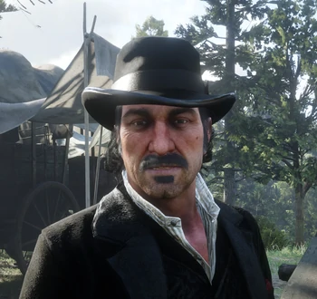

Dutch Van Der Linde
Chef d'une grande bande de hors-la-loi et de renégats. Idéaliste, anarchiste, charismatique, instruit et expérimenté, il semble néanmoins commencer à montrer des signes de faiblesse face à l'avènement du monde moderne.
Histoire
Dutch est né en 1855 d'une mère anglaise nommée Greta et d'un père néerlandais quelque part près de Philadelphie. Son père a participé à la guerre de Sécession du côté de l'Union, il a perdu la vie lors de la bataille de Gettysburg. Dutch développe donc une haine féroce contre les sudistes. À l'âge de 15 ans, il quitte le foyer familiale notamment en raison de sa désobéissance et des désaccords qu'il a avec sa mère. Greta décède en 1881 et est enterrée dans le cimetière de Blackwater, ce que Dutch n'apprendra que des années plus tard. Dutch rêve d'une vie libre et indépendante. Pour réaliser ses rêves, il entreprend une vie de criminel. Au cours des années 1870[1], il rencontre un escroc nommé Hosea Matthews dans un campement sur la route de Chicago. Tout deux tentent se voler l'un et l'autre avant de réaliser leurs talents respectifs. Ils décident alors ensemble de créer la Bande de Dutch van der Linde. Quelques temps après, Dutch et Hosea se retrouvent dans la ville de Kettering dans l'Ohio. Ils se présentent comme des marchands internationaux et réussissent à escroquer douze habitants pour un total de 300$. Les victimes pensaient acquérir des produits portugais. Les deux hommes se font prendre et arrêter par le shérif Carmichael. Le 9 mars 1877, Dutch et Hosea planifient une évasion, qu'ils réalisent. Plus tard dans l'année, Dutch et Hosea rencontrent un orphelin, Arthur Morgan. Ils décident de prendre l'enfant sous leurs ailes et lui enseignent la lecture, l'écriture, la chasse, à tirer et monter à cheval. Arthur sera le premier véritable membre de la bande. Dans le même laps de temps, Dutch commence une liaison amoureuse avec une femme nommée Susan Grimshaw, qui elle aussi devient, à son tour, un membre de la bande. Cependant, cette relation prend fin lorsque Dutch rencontre une autre femme dont il tombe éperdument amoureux, Annabelle. La bande s'associe dans un premier temps avec Colm O'Driscoll, mais les choses se corsent lorsque Dutch tue le frère de ce dernier qui, en retour, se venge en assassinant Annabelle. Naît alors entre les deux hommes une haine considérable. En 1885, Dutch tombe sur un groupe de colons venant de l'Illinois qui lynche un enfant de 12 ans, John Marston, qui les avait volé peu de temps auparavant. Dutch sauve le jeune garçon et, comme il l'avait fait pour Arthur, il l'instruit. Dutch dit que John et Arthur sont ses "fils" préférés. En 1887, Dutch mène la majorité de la bande pour braquer une banque. Arthur et Hosea participe au braquage. A deux heure du matin, les trois entrent le bâtiment nommé Lee et Hoyt. La bande vole plus 5000$ en or. Après le casse, ils donnent de l'argent à un taudis et orphelinat. Ils se considèrent alors comme des 'robins des bois'. C'est à cette période que Dutch devient un homme recherché et a une prime sur sa tête. En 1893, Dutch rencontre un vétéran de la guerre nommé Marion Williamson, qui tente de le voler. Cependant, Dutch lui rigole simplement au nez, le rendant puis Dutch l'invite dans la bande. Malgré son intelligence modérée, il reste fidèle à la bande. En 1895, Dutch vole plusieurs poules, un mexicain du nom de Javier Escuella tente alors de faire de même. Seul et affamé, Dutch le nourrit, le réchauffe et le fait rentrer dans la bande. Javier devient l'un des membres les plus loyaux. La bande commet de nombreux méfaits à travers l'Ouest américain, acquérant une certaine renommée. Dutch laisse entendre que le gang vole et tue pour un intérêt supérieur, tout en formant une famille dont tous les membres étaient des "fils de Dutch", des "frères". John considérera plus tard que ces justifications étaient en réalité des excuses pour voler et tuer impunément et donner du sens à leurs déshonorables actions. En 1894, une prostituée du nom d'Abigail Roberts rejoint la bande. Bien qu'elle ait alors des relations sexuelles avec la plupart des membres du gang, elle tombe amoureuse de John. De leur union naît John Jr., dit Jack. La bande devient la famille du jeune garçon, qui considère ses membres comme des oncles et des tantes. En 1899, d'autres personnes rejoignent la bande, parmi lesquelles Charles Smith et Micah Bell. Ce dernier a alors l'idée de faire un gros coup : braquer un ferry à dans la ville de Blackwater. Ce braquage sera alors connu sous le nom de massacre de Blackwater. La bande vole $150 000, mais la situation tourne court lorsque les représentants de la loi, et principalement la Pinkerton National Detective Agency, sont tout près de capturer la bande de hors-la-loi. Dans la panique, Dutch tue une femme innocente, Heidi McCourt. John est blessé à la jambe, Mac et Jenny meurent, Davey est grièvement blessé et Sean est capturé par les forces de l'ordre. Les membres survivants de la bande parviennent à prendre la fuite. Dutch perd une grande partie de l'argent volé dans la fuite, mais parvient à cacher le reste dans un endroit secret à Blackwater.
Naissance - 1855 Statut - Décédé (1911) Sexe - Masculin Nationalité - Américain Occupation - Chef de bande
Anecdote Ironiquement, Dutch utilise un Pistolet semi-automatique, un symbole de nouvelle technologie, alors que lui-même est contre la civilisation.